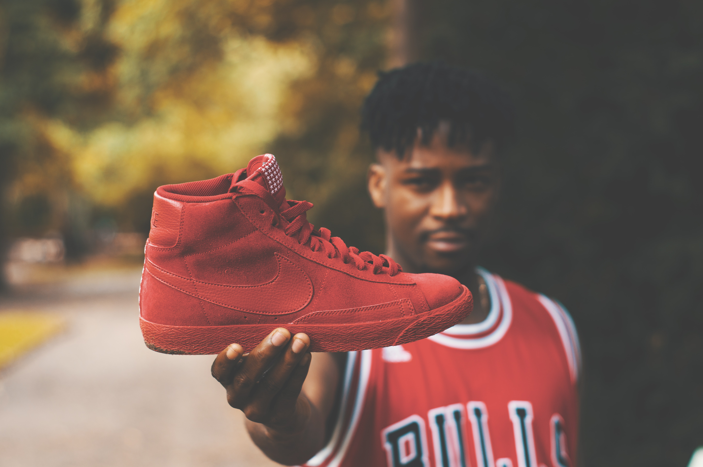

A Python analysis of 70 years of basketball data
This project explores how the game of basketball has changed over time with the rise of "positionless basketball".

Using K-means Clustering Machine Learning Algorithm to group NBA players
This project uses a dataset from the 2013-14 NBA season. Using K-means Clustering, a unique machine learning approach, players can be grouped. Click to see who the top two players were that season.

Additional Projects.
While my main focus is sports analytics, I also have projects on many other topics. Click below to see my non sports based portfolio.